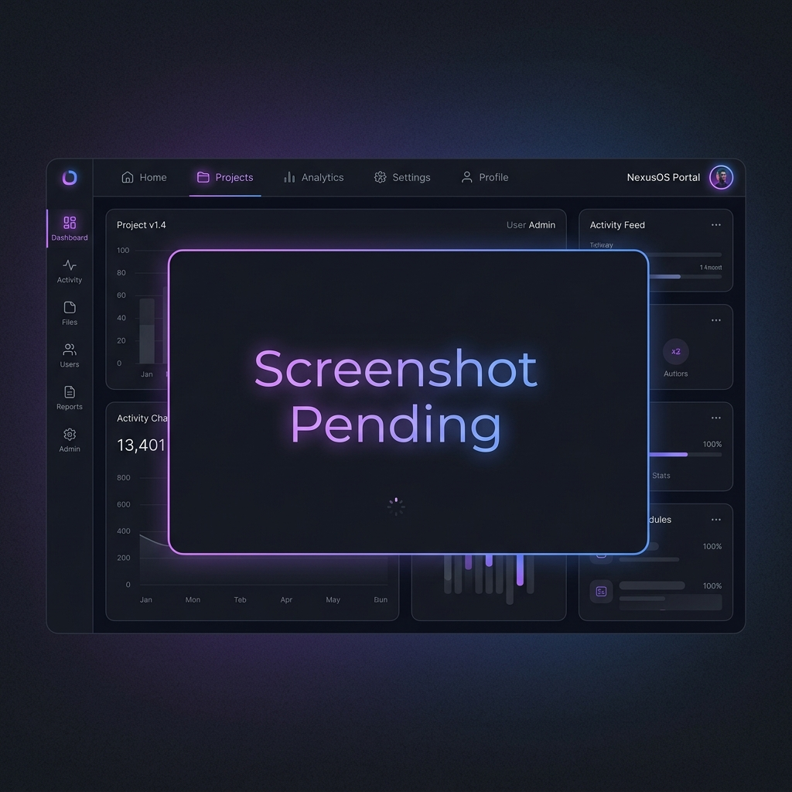

A native, lightweight video player application specifically optimized for Linux, Arch Linux, and the Steam Deck, built with tactile touch controls and immersive display modes.

Double-click to enter full screen. Features a sleek, auto-fading On-Screen Display that hides controls after 3 seconds of inactivity.
Remembers the exact second you stopped watching. Automatically saves playback coordinates for the entire carousel history.
Includes touch-friendly kinetic carousel scrolling, oversized touch targets, and full game controller focus traversal.
Utilizes background thread thumbnail generation, remembers the last media directory, and automatically steps to the next queue item.
# One-Step SteamOS/Linux Desktop Installation
curl -sSL https://raw.githubusercontent.com/pmitchell-dev/VidSimp/master/install.sh | bash
| Component | Implementation | Benefit |
|---|---|---|
| Playback Engine | LibVLC via `python-vlc` bindings | Zero-dependency format support and hardware acceleration |
| GUI Engine | PyQt6 Core & Windowing | Stable UI lifecycle, touch events, and native rendering |
| Thumbnail Engine | Asynchronous `ffmpeg` worker pipeline | Seamless thumbnail building without blocking main UI |
| State Persistence | `QSettings` Registry | Saves playheads, focus nodes, and directory memory |